Capture862d60c6; final package 8b98266ef5960535140feb05687bb2c9fac04156. Production files equal, see provenance. Published-before ab75. Independent acceptance/release pending.
Published main ab75, same geometry/camera, read selected0,0
Existing released read mode
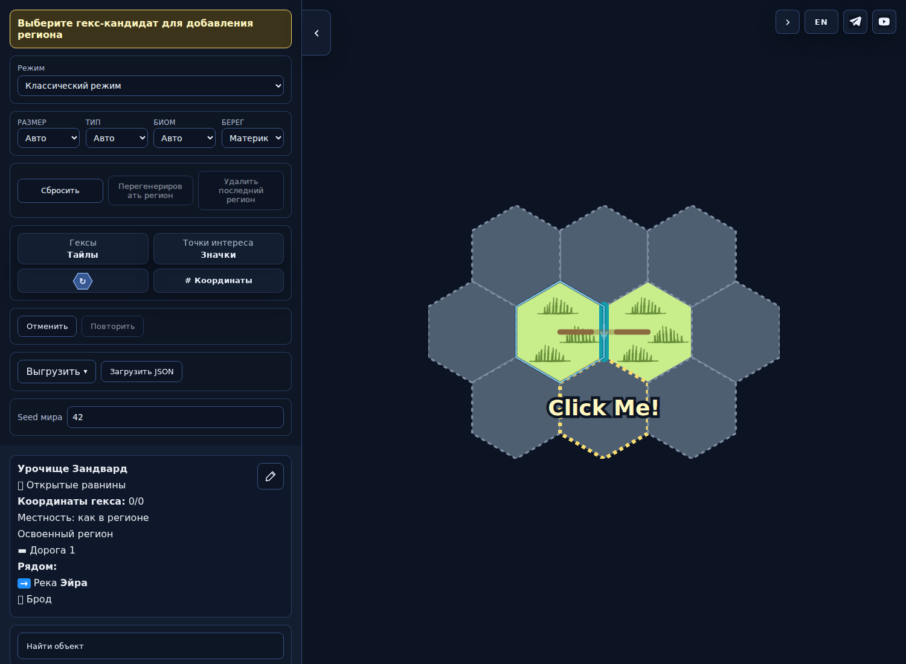
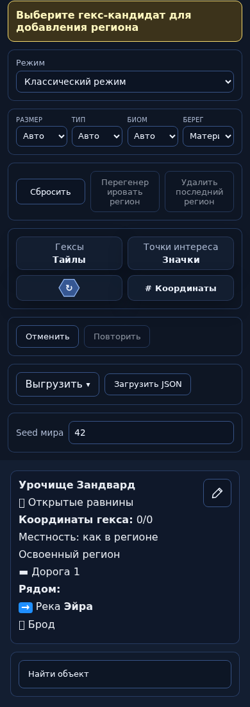
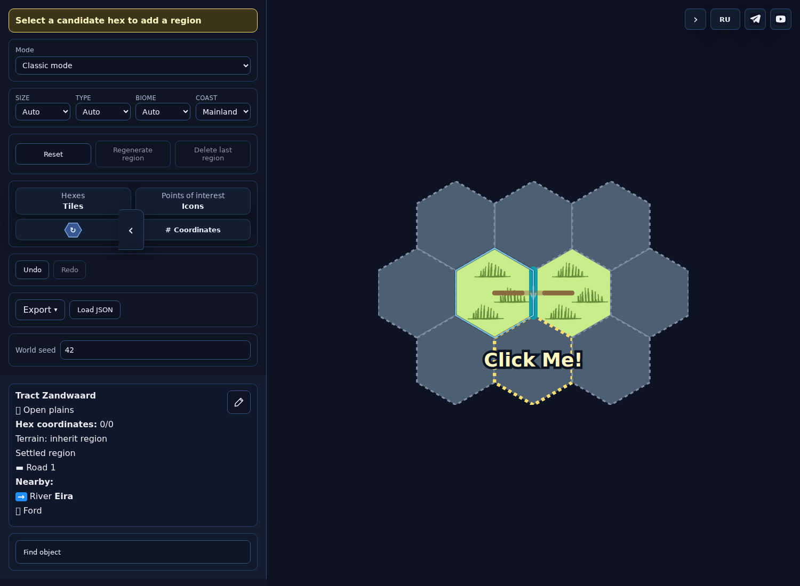
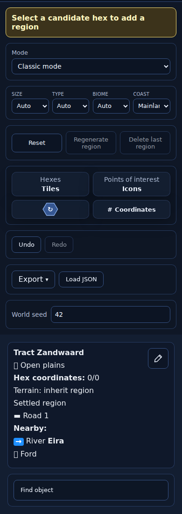
Edit → Find Eira or physical map edge → choose reach/vertex
Exact river/reach highlight, native F/features, compact actions RU/EN1500/390
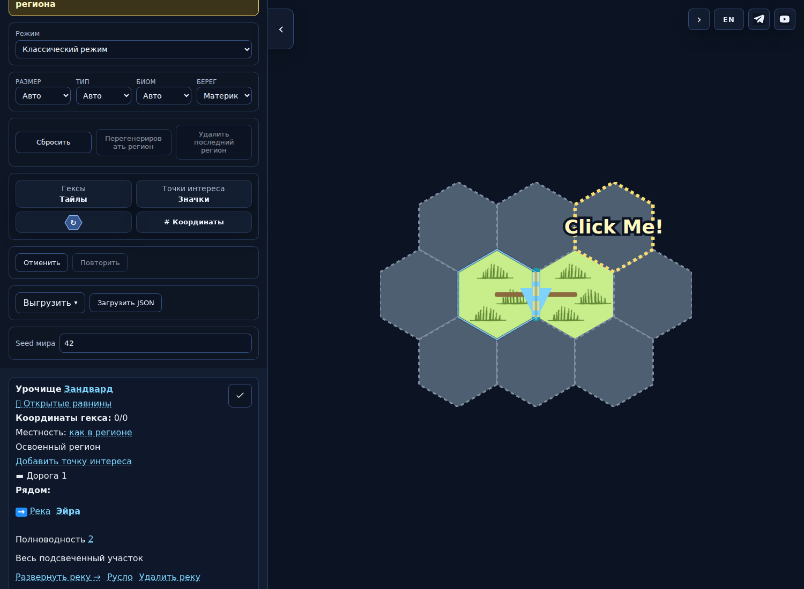
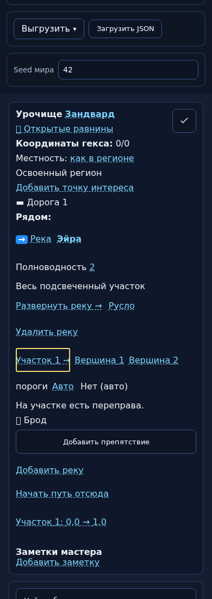
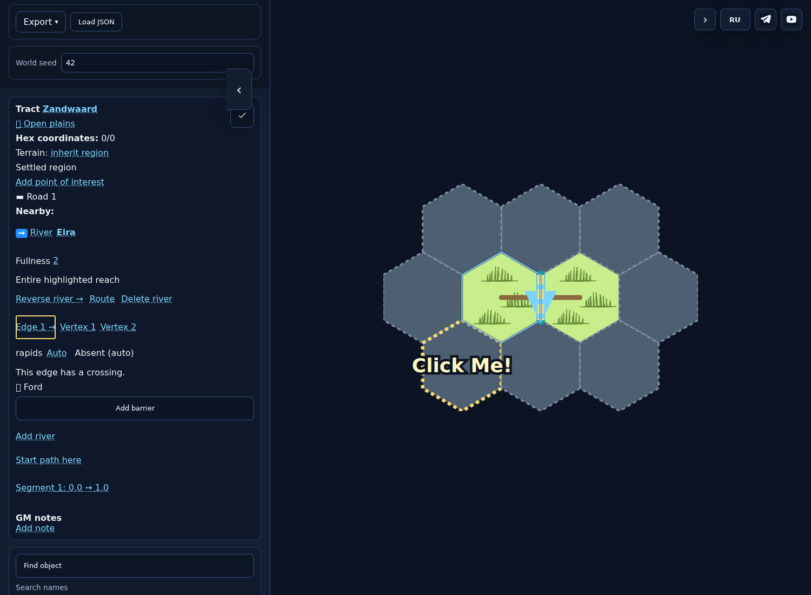
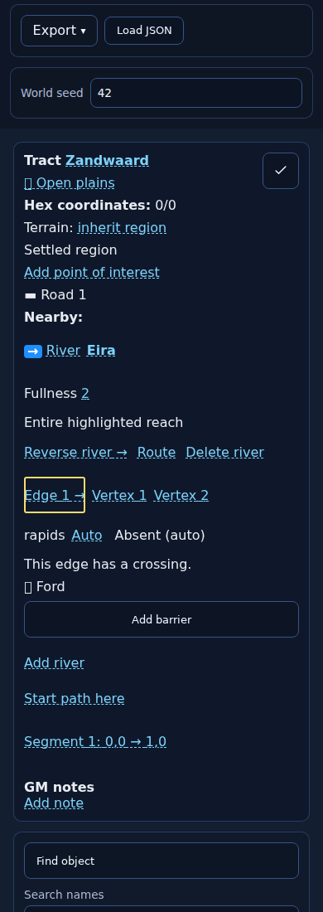
F2→3 at ford → explicit Ferry → Confirm
Named dependency row; no map write until choice and confirmation
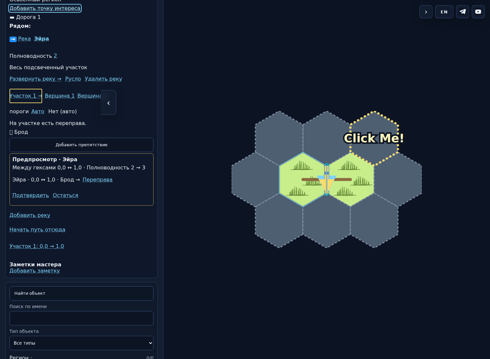
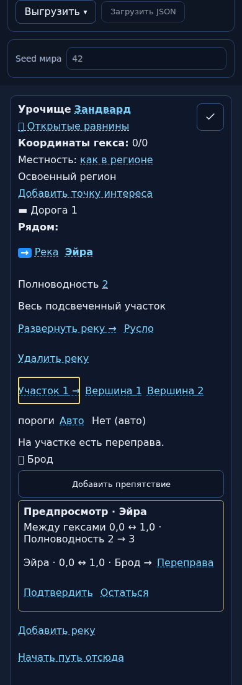
Route starts replacement; separate empty replacement Finish
Transient own-edge replacement; visible error preserves document
Delete river with named dependency preview → Confirm → Undo
River/crossing removed together, counter retained; exact restoration
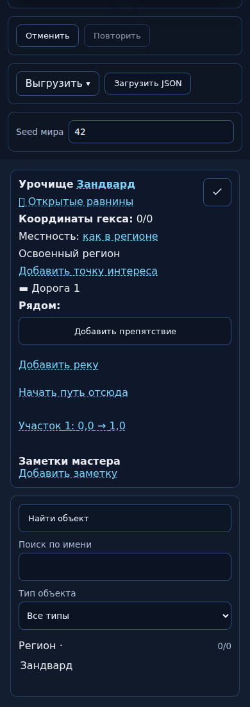
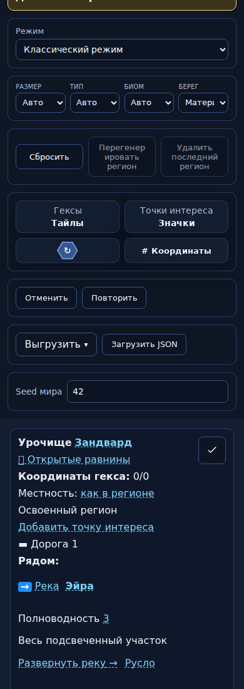